![[Main Page]](../../rsrc/bci2000logo.svg)
IIRFilterBase Class
Programming Reference
Location
BCI2000/src/shared/modules/signalprocessing
Synopsis
The IIRFilterBase class is a base class for BCI2000 filters that provide digital filters. Classes derived from IIRFilterBase are supposed to implement IIRFilterBase::DesignFilter(), specifying filter behavior by means of a transfer function. Differently from typical IIR filter implementations, which expect the transfer function in terms of filter coefficients, the BCI2000 IIRFilterBase class expects the transfer function in terms of its numerator's roots ("zeros") and denominator's roots ("poles"); this approach improves numerical stability at higher filter orders.
FilterDesign Library
While any method may be used to determine the transfer function, the FilterDesign library provides a convenient way to compute a transfer function from desired filter properties. It is located at BCI2000/src/extlib/math/FilterDesign, and was written for BCI2000 based on public-domain code by A.J. Fisher; it provides a number of classic filter design methods in form of C++ classes. To use such a class, instantiate it, use its member functions to configure parameters, and obtain its TransferFunction property (see the example section below).
CAVEAT: When specifying frequencies, the FilterDesign library expects them normalized to the sampling rate, such that the Nyquist frequency becomes 0.5. This is different from Matlab, where filter design functions expect frequencies normalized to the Nyquist frequency, such that the Nyquist frequency corresponds to 1.0.
FilterDesign::Butterworth
Order(order)
Set the filter order to the specified value.
Lowpass(corner frequency)
Design a low pass with the specified corner frequency, i.e. suppress signals above the given frequency. Frequencies are specified in terms of the sampling rate, and expected to be below 0.5 (the Nyquist frequency).
Highpass(corner frequency)
Design a high pass with the specified corner frequency, i.e. suppress signals below the given frequency.
Bandpass(low corner, high corner)
Design a bandpass with the specified corner frequencies, i.e. suppress signals outside the given frequency range.
Bandstop(low corner, high corner)
Design a bandstop with specified corner frequencies, i.e. suppress signals inside the given frequency range.
TransferFunction
Returns a transfer function as a rational polynomial with complex roots as declared in BCI2000/src/extlib/math/Polynomials.h. From the Ratpoly object returned, numerator and denominator polynomials may be extracted using Ratpoly::Numerator() and Ratpoly::Denominator(), respectively. Both functions return a polynomial, from which roots may be obtained using Polynomial::Roots(), and coefficients may be obtained using Polynomial::Coefficients().
FilterDesign::Chebychev
The Chebychev class provides an interface identical to the Butterworth class, and an additional function to specify ripple amplitude.
Ripple_dB(amplitude)
Set the amplitude of the filter's passband ripples in dB.
FilterDesign::Resonator
Rather than through corner frequencies, the Resonator class is parameterized specifying a resonant frequency in conjunction with a quality factor (which is inversely proportional to the resonance peak's width).
QFactor(q)
Set the resonator's quality factor to the specified value.
Bandpass(center frequency)
Design a bandpass around the specified center frequency.
Bandstop(center frequency)
Design a bandstop around the specified center frequency.
Allpass(center frequency)
Design a filter with a constant frequency response but altering phase at the center frequency.
Remarks
- You may obtain a serial combination of filters by multiplying their individual transfer functions prior to extracting gain, zeros, and poles.
- The actual IIR filter implementation uses a sequence of order-one filter stages corresponding to pairs of zeros and poles. Thus, there is no limitation to the filter order, as it would be the case for implementations based on coefficients, due to numerical instability.
- Roots common to both numerator and denominator will be automatically removed from the overall transfer function, so the combined filter may be of an order which is lower than the sum of individual filter orders.
Background Information
The effect of a linear filter may be viewed in terms of a transfer function. When transforming both the filter and its input signal from the time domain into a more convenient representation (applying a Z transform), the input is transformed into a function over the complex plane, and the effect of the linear filter is transformed into multiplication with another rational transfer function 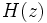 defined over the complex plane, i.e. is a fraction consisting of a polynomial in 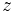 as its numerator, and another fraction consisting of a polynomial in as its denominator (for more information, see http://en.wikipedia.org/wiki/Linear_filter#Mathematics_of_filter_design):
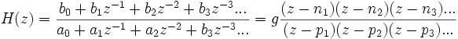
where the 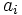 and 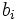 are called coefficients, the 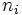 are called zeros because H assumes a value of zero whenever 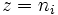, and the 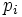 are called poles because H goes to infinity wherever 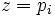, and 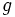 is a gain factor.
Importantly, the effect of applying filters in series is represented by multiplication of the two transfer functions. In reverse, the effect of a single filter may be decomposed into a series of filters by writing H as a product of transfer functions.
Filter design methods, such as Butterworth's or Chebychev's, define a filter by placing H's zeros and poles in the complex plane, with the number of zeros and the number of poles corresponding to twice the filter's order.
Often then, filters are implemented in terms of a series of delays for input and output samples, and coefficients associated with those delays, such that the current output sample is computed as the difference of past input samples, weighted with input coefficients , and past output samples, weighted with output coefficients . Comparing such a filter's action to that of a filter with transfer function H, one finds that input coefficients correspond to the polynomial coefficients of H's numerator, and output coefficients ai correspond to the polynomial coefficients of H's denominator. A standard procedure in filter design is thus to take a filter's poles and zeros, and convert them into coefficients and by expanding numerator and denominator polynomial into coefficient form, and dividing both by 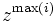 to obtain the correct order of coefficients.
While this approach is computationally most efficient, it suffers from a lack of computational accuracy, and resulting instability. The cause of this instability is the fact that arbitrarily large terms need to cancel out in the difference between weighted input and output samples, but may fail to do so due to roundoff errors.
In BCI2000, a different approach is taken. Taking raw zeros and poles, the transfer function is first simplified by removing factors that cancel out. Then, it is taken apart into a product of transfer functions with a single zero and a single pole each, corresponding to a series of filters, each of order 1. Thus, in BCI2000 IIR filters may be of arbitrary order without risk of instability (provided the filter's poles and zeros meet the criteria for stability in the general sense, of course).
Examples
Creating a BCI2000 Filter
To implement a 2nd order Butterworth low pass filter, you might derive a class ButterworthLP from IIRFilterBase, with its declaration being
class ButterworthLP : public IIRFilterBase
{
public:
ButterworthLP();
virtual ~ButterworthLP() {}
private:
virtual void DesignFilter( const SignalProperties&,
IIRFilterBase::Real& gain,
IIRFilterBase::ComplexVector& zeros,
IIRFilterBase::ComplexVector& poles ) const;
};
The filter's corner frequency is specified in a parameter "ButterworthLPCorner":
ButterworthLP::ButterworthLP()
{
BEGIN_PARAMETER_DEFINITIONS
"Filtering float ButterworthLPCorner= 30Hz % % % // Low pass corner frequency",
END_PARAMETER_DEFINITIONS
}
In the DesignFilter method, we use the FilterDesign library to obtain poles and zeros from parameters:
void
ButterworthLP::DesignFilter( const SignalProperties& inSignalProperties,
IIRFilterBase::Real& outGain,
IIRFilterBase::ComplexVector& outZeros,
IIRFilterBase::ComplexVector& outPoles ) const
{
float corner = MeasurementUnits::ReadAsFreq( Parameter( "ButterworthLPCorner" ) )
/ inSignalProperties.Elements() * Parameter( "SampleBlockSize" );
if( corner < 0.0 || corner > 0.5 )
bcierr << "ButterworthLPCorner exceeds range" << endl;
Ratpoly<FilterDesign::Complex> tf = FilterDesign::Butterworth()
.Order( 2 )
.Lowpass( corner )
.TransferFunction();
outGain = 1.0 / abs( tf.Evaluate( 1.0 ) ); // make sure that LF gain is unity
outZeros = tf.Numerator().Roots();
outPoles = tf.Denominator().Roots();
}
For an example that combines a notch filter with a high pass filter, please refer to the SourceFilter's source code.
Obtaining Filter Coefficients
In case you need to use a filter designed by the FilterDesign class with Matlab's filter() function, or any other direct form II transposed filter implementation, use the FilterDesign::ComputeCoefficients() function.
Ratpoly<FilterDesign::Complex> tf = FilterDesign::Butterworth()
.Order( 2 )
.Lowpass( 10 / 500 )
.TransferFunction();
FilterDesign::ComplexVector a, b;
FilterDesign::ComputeCoefficients( tf, b, a );
NOTE: When comparing filter coefficients with Matlab's, consider that Matlab's convention for specifying frequencies differs from that of FilterDesign. For more information, see the Caveat above.